われわれは、いかにして変更点を追うか
ChangeLog/Issueを追う技術
自己紹介

azu
@azu_re
Web scratch, JSer.info
アジェンダ
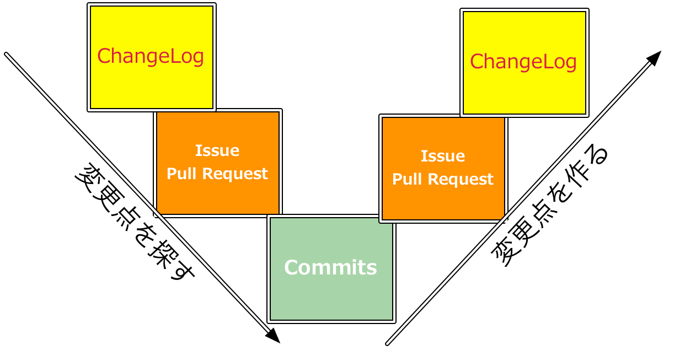
- 変更点を
- ChangeLogで知る
- Issue/Pull Requestで知る
- Commitで知る
アジェンダ
- 変更点を
- Commitに書く
- Issue/Pull Requestを扱う
- ChangeLogにまとめる
変更点を追う :mouse:
ChangeLogの追い方
- ChangeLogを追うにはまずChangeLogの更新に気づく事が必要
- GitHubでライブラリのリリースを見ていくためのツールや方法に書いた
- 更新検知の仕組みや補助ツールについて
- リポジトリのWatch => azu/github-reader
- タイムライン => azu/github-reader
- Star => starseeker
- GitHub ReleaseのRSS => azu/github-releases-to-feedly
- GitHub Releaseの閲覧補助
ChangeLogの問題
- 全ての変更がChangeLogからわかるわけじゃない
- そもそも多くの人は面倒なのでChangeLogを書かない
- ChangeLogがあってもそれはサマリだと、細かい内容が分からない
- ChangeLogより更に細かく見たい場合はまずはIssue/Pull Requestを探す
Issue/Pull Request
- 大きなライブラリほどIssueやPull Requestと関連付けてコミットされる
- ChangeLogにも該当Issueが書いてあることが多い
- => ChangeLogからIssue/PRを探すとより細かい情報が見られる
- ChangeLogにIssue/PRが書いてない場合は?
Issue/PRの探し方 - 検索
Babel 5.3.0の例
Babel 5.3.0の変更点
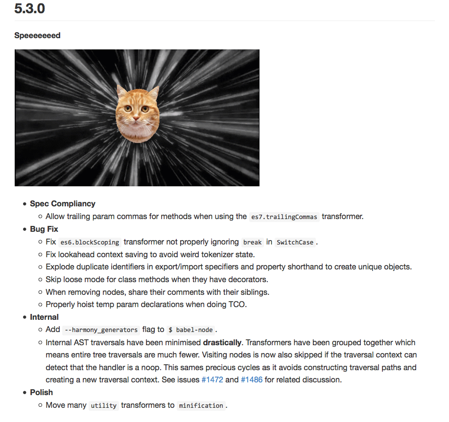
- 変更内容については書いてある
- [New Feature]、[Bug Fix]、[Spec Compliancy]などジャンル分けされている
- "Speeeeed" とあるがどれくらい変わったのか書いてない
- IssueやPR、該当コミットへのリンクはない
Speeeeed??
具体的な速度の向上内容を知りたい!
Speeeeed - 何がどう変わったのか
Twitterで検索
- https://github.com/babel/babel/blob/master/CHANGELOG.md#530 への言及から探す
- "Speeeeed Babel"で検索する
- 公式アカウントから探す
Speeeeed - 見つかった
- 20-40% ぐらい速度が上がったとのこと(公式アカウントより)
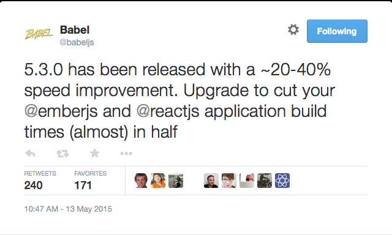
Speeeeed - Depth
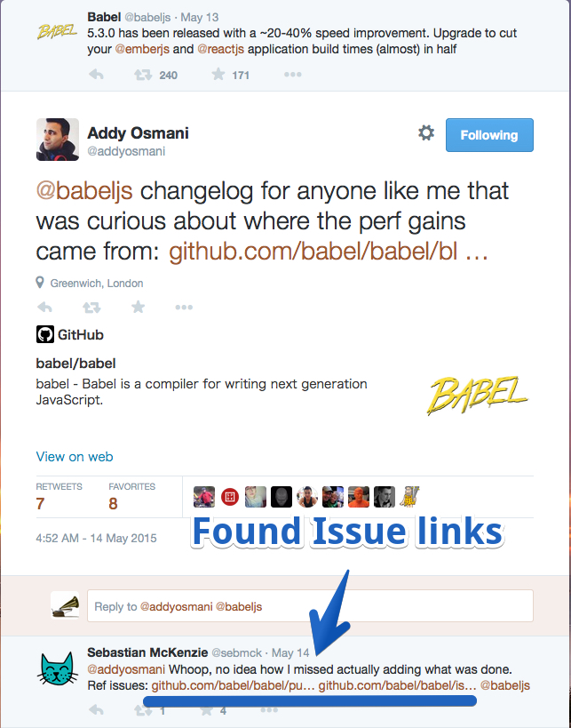
- パフォーマンスの向上は鵜呑みにしない :warning:
- 何が変更して、どういう計測方法で変わったのかを調べる
- 該当IssueやPRを見つけたい :seedling:
- :bulb: 公式アカウントへのレスで発見 ！
Speeeeed - 結果
- 以下のIssueを見ていけばいいことがわかった
- Speeeeed · Issue #1486 · babel/babel
- Merge internal transformers into single traversal pass by sebmck · Pull Request #1472 · babel/babel
- 6.3.0でマージされたPR
- 内部のtransformerを最適化する変更が入った
Speeeeed - 結果
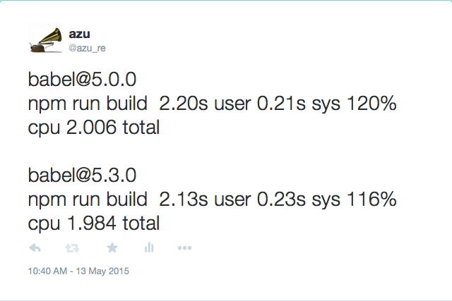
- tsserver.js、Traceur、Ember等を対象にして大体20-40%ぐらいコンパイル速度が上がった
- Tweetの根拠が分かった
- 根拠や理論は分かった => 実際に自分で計測する
- プロジェクトによっては誤差レベルだった
Speeeeed - 結論
- ChangelogからTwitter、GitHub Issueを探せた
- Merge internal transformers into single traversal pass by sebmck · Pull Request #1472 · babel/babel
- 複数のtransformerを1 passで通す変更が入った
- transformerを使うプロジェクトでは変換速度が上がった
- transformerを使ってないプロジェクトでは影響が少ない
Next: ファイルから探す
es7.trailingCommasの仕様への追従
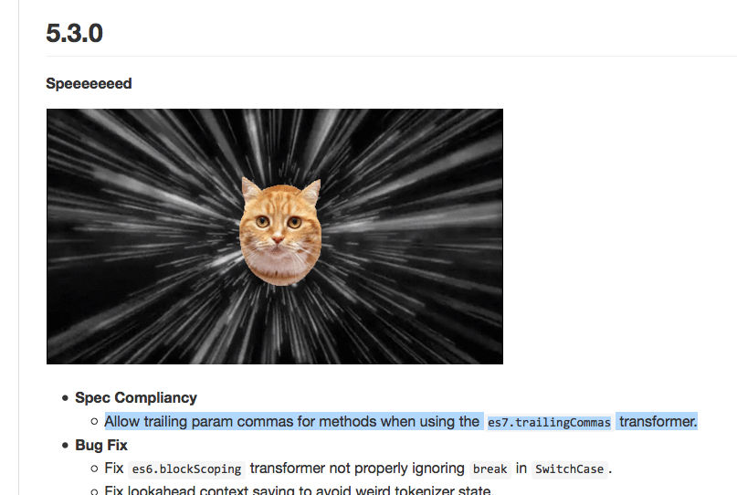
Allow trailing param commas for methods when using the es7.trailingCommas transformer.
どういう変更だったのか詳細を知りたい :thought_balloon:
es7.trailingCommasの仕様への追従
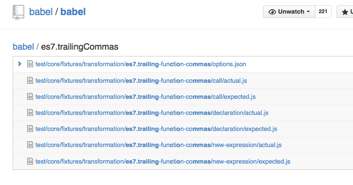
- Babelでは
es7.trailingCommasの変換するためのtransformerはファイルを分けて実装されてる - GitHubでは"T"でファイル検索ができる
- github のプロジェクトのページでファイルのインクリメンタル検索 - わからん
ファイルからコミットを探す
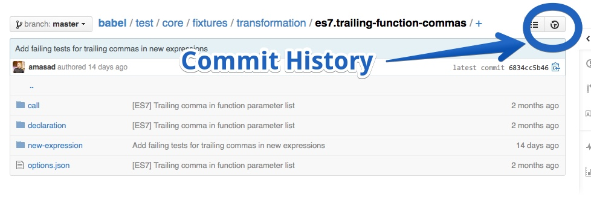
コミットからIssueを探す
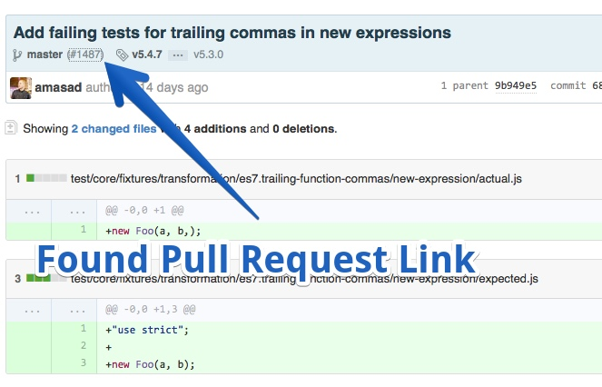
- 該当コミットからIssueへのリンクがあるかを見る
- GitHubではPull Requestでマージされたコミットに自動的にリンクが付く
- Linking merged pull requests from commits
ファイルから探す - 結論
- 変更履歴から関連するファイルを検索
- そのファイルについてのコミットを見る
- 該当コミットからPull Requestを発見出来た :bulb:
- [es7.trailingFunctionCommas] Allow in new expressions by amasad · Pull Request #1487 · babel/babel
ここまでのまとめ
[fit] 追う時に何を見つけたら詳細が分かるか?
- GitHubのリポジトリ検索
- Issueも検索できるのでキーワードから探す
- 関連ファイルからの検索
- 関連ファイルから変更されたコミットを探す
- Twitter検索
- その変更に関係することを書いてるを探す
- 公式サイト/ドキュメント
- リリース時にドキュメントが更新されてるかも
ここまでのまとめ
- Issueを見つければ勝ち :thumbsup:
- Pull Requestを見つければ勝ち :thumbsup:
- Commitを見つければ勝ち :thumbsup:
- もしコミットすら見つからなかったら :question:
- ここまではブラウザだけでできるので比較的気軽
コミットを検索する
ここからはコマンドラインが必要
GitHubの問題
- コミットメッセージを検索する手段がない
- repositories、code、Issue、userしか検索できない
ノイズが多い場合
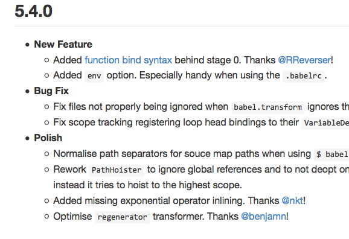
Added "env" option. Especially handy when using the .babelrc.
- 上記の変更の詳細を知りたい！
- Issue検索だとノイズが多くて探せない時
- 直接該当する変更のコミットを探す
該当コミットを探す
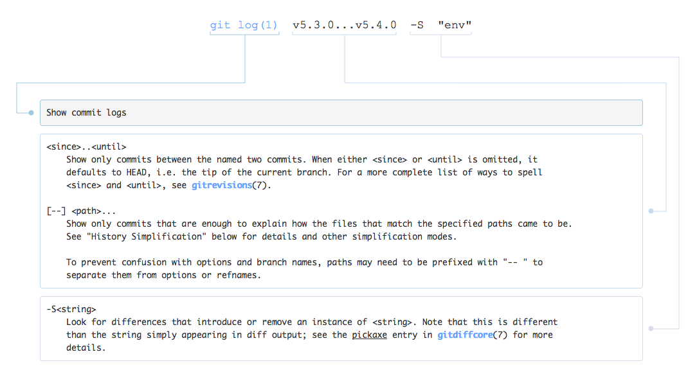
git clone https://github.com/babel/babel.git
git log v5.3.0...v5.4.0 --grep "env"
# v5.3.0からv5.4.0の中で"env"というコミットメッセージを探す
commit 41b5607ef374945b0e4ca771644d94d3b849ed58
Author: Sebastian McKenzie <sebmck@gmail.com>
Date: Fri May 15 00:11:28 2015 +0100
fix env option tests
commit 024e4454a1e3778b0f9b6d081d5f4e792f6035db
Author: Sebastian McKenzie <sebmck@gmail.com>
Date: Thu May 14 23:47:56 2015 +0100
add env option - closes #1531
コミットメッセージの検索
- explainshell.com - git log v5.3.0...v5.4.0 -S "env"
- 024e4454a...が該当コミットっぽい
- motemen/git-browse-remoteでGitHubのコミットページを開く
- 関連するIssueが見つかった！ :bulb:
git-browse-remote 024e4454a1e3778b0f9b6d081d5f4e792f6035db
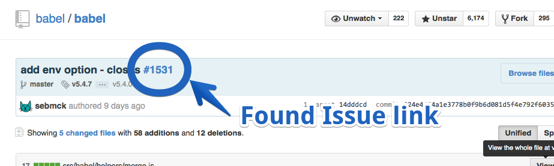
コミットのDiff検索方法色々
- コミットメッセージのみで検索
git log --grep "word"
- コミットの中身の差分から検索
git log -s "word"
- git logでコミットの差分の中身で絞り込む - Qiita
コミットの検索する必要性?
- できればそこまで行く前に解決してた方が嬉しい
Added "env" option. Especially handy when using the .babelrc.
- この例もドキュメントを見るのが正解！
- Options · Babel
- しかし、どういうユースケースなのかはIssueに残ってる場合が多い
GUIでコミット検索

- azu/git-scriptable-search
- 作った
- JavaScriptでフィルターを書いてコミットの絞込出来るアプリ
- フィルターの処理コストが大きい問題がまだ未解決…
Breaking Change検索
Breaking Changeの検索
- ある機能があるバージョンで壊れてた
- 具体的に壊れた/壊した理由を知りたい！
- どこで壊れたのかコミットをみつける
- コミットが見つかったIssueを探す
git bisectを使った検索
- 任意のテストスクリプトをコミット毎に走らせて、テストが失敗するコミットをみつける
- AdventCalendar - git bisect で問題箇所を特定する - Qiita
- git bisectでメソッドが削除されたコミットを探す - しんふぉにゃん
- さすがにここまで行くとやり過ぎ感…
探すから作るへ
変更点の追い方≒変更点の作り方
- 変更点が追いやすい == いい変更点
- 変更点の追い方を知ってる ≒ いい変更点を作れるのでは?
追いやすい変更点って?
- 良いコミット
- 良いIssue/Pull Request
- 良いChangeLog
変更点を作る :construction_worker:
良いコミット
コミットメッセージを書く
- 今更感があるけど、要約と本文で書くのが基本
- How to Write a Git Commit Message
- 見えないチカラ: 【翻訳】Gitのコミットメッセージに関する注意点
良いコミットメッセージ?
- 追いやすい変更点からの良いコミットメッセージとは? :thought_balloon:
- サマリと本文がある
- 検索しやすいキーワードが存在する
- 関連するIssue/Pull Requestが書かれてる
- 実現するための規約の一種としてconventional changelog
conventional changelog
- ChangeLog自動生成のためのコミットメッセージ規約のこと
- ajoslin/conventional-changelog
feat(ngInclude): add template url parameter to events
The `src` (i.e. the url of the template to load) is now provided to the
`$includeContentRequested`, `$includeContentLoaded` and `$includeContentError`
events.
Closes #8453
Closes #8454
conventional changelog
- 規約の形は何でも良い = ツールとの相性
- コミット検索向けのキーワードとしてtypeとcomponentの利用
component commit title
commit type / /
\ | |
feat(ngInclude): add template url parameter to events
body -> The 'src` (i.e. the url of the template to load) is now provided to the
`$includeContentRequested`, `$includeContentLoaded` and `$includeContentError`
events.
referenced -> Closes #8453
issues Closes #8454
コミットメッセージへの追加情報
- コミットの種類 : feat?、fix?、Breaking Change?
- コミットの対象: (スコープ)
- 多分コミット書くときに悩む
- コミットメッセージを検索しやすくするためのキーワードとして考えるといいのかも
コミットメッセージへの追加情報
- 関連するIssueの場所
- GitHubはIssueの
#42的なIDをコミットメッセージに書くと連動する - IssueのURLでも問題ない
- Closing issues via commit messages - User Documentation
- GitHubはIssueの
conventional changelogのメリット
- コミットから自動的にChangeLogを生成出来る
- ChangeLogに該当Issueへのリンクが生成できる事が大事
- ajoslin/conventional-changelog
- rvagg/changelog-maker
コミットメッセージを書くの面倒問題
- 特に関連するIssueを書くのが大変(補完の問題)
- GitHubではPull Requestでマージされたコミットに自動的にリンクが付く
- つまり、常にPull Requestで開発すれば自動的にIssueと紐づく！
Pull Request駆動
Pull Request駆動
- Pull Requstで取り込まれたコミットは自動的にIssueと紐づく
- Linking merged pull requests from commits
- Pull Requestに詳細を書くことで、自動的に情報が集約される + コミットからのリンク
Pull Request駆動の副作用(感想)
- コミットが常にサーバにあるので、複数端末での開発がしやすい
- 開発時のメモ欄がある感覚
- Watchしてる人へ通知が行って、他の人が参加するチャンスがある
ChangeLog
ChangeLogは人が読むもの
- ChangeLogは人が読むものなので、無意味な自動生成は無意味
- 自動生成はできるが、自動生成のソースがダメだとChangeLogもダメ
- 良いコミットの副産物として良いChangeLogが作れる
- 良いコミットではない場合は、手動で書いたほうがマシ
ChangeLogにあると良いもの
- 日付
- バージョン
- 変更内容
- グルーピングされてるとより良い
- 関連するIssue/Pull Request
- Keep a Changelog
GitHub ReleaseとCHANGELOG
- GitHub Release
- CHANGELOGファイル
- どっちに書く?
GItHub Release
- Pros
- 日付、バージョン、パーマネントリンク、RSSを得られる
- git tagと連動できる
- Cons
- メッセージの自動化がイマイチ難しい
- Git tagとGitHub ReleasesとCHANGELOG.mdの自動化について
CHANGELOG
- Pros
- 伝統的なやり方なのでツール等が多い
- 自動化がしやすい
- Cons
- パーマネントリンクが微妙になりやすい(Markdownじゃないとリンクができない、ハッシュ)
まとめ
- ChangeLogの追い方を知ることは、いいChangeLogを書くことに繋がる
- GitHub上だけでも情報の詳細度が異なる
- ChangeLog > Issue/Pull Request -> Commits
- この3つが繋がるような変更点をできるのが理想的
おわり
- This presentation is also Pull Request Driven
- われわれは、いかにして変更点を追うか - Issueを追う技術 by azu · Pull Request #10 · azu/slide